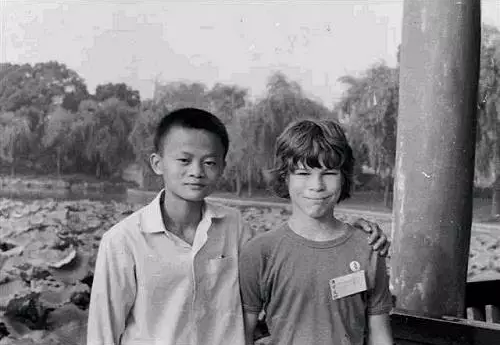

马云于1964年9月10日，出生在上海西南百里外的杭州。这一年正好是中国的龙年。作为未来一个有代表性的中国企业家，马云却降生在一个私营经济几乎销声匿迹的年代。
马云小时候就很喜欢英语及英文著作，特别喜欢听收音机中电台朗读的马克·吐温所著的《汤姆·索亚历险记》。1979年，杭州接待的外国游客猛增到了4万多人。马云不放过任何练习英文的机会。常常是天刚破晓，他就起床，骑上自行车，花40分钟赶到杭州饭店去和外国游客攀谈。后来他回忆道：“每天早晨从5点开始，我就在宾馆前读英语。很多游客来自美国，也有一些是欧洲人。我免费带他们游览西湖，他们教我英语。整整9年！我每天早晨都在练英语，不管天气好坏。”
马云一直认为学习英语给他的人生带来了巨大的帮助：“英语帮了我大忙。它让我更好地了解这个世界，让我遇到了一些非常优秀的CEO和领导者，也让我认识到了中国和世界的差距。”

1980年，在杭州的外国游客中有这么一家人，他们是来自澳大利亚的莫利一家。对于马云，这家人的杭州之行改变了他的生活。
戴维·莫利回忆道：“晚上自由活动的时候，我们在公园里玩火柴，一个男孩儿走过来和我们打招呼，他想锻炼一下自己新学的英语口语技能。他介绍了自己，我们互相寒暄了几句，约定之后再来这个公园碰面。”
戴维的父亲肯·莫利说他第一次见到马云时，还以为他是货郎，或者说街头小贩。“他非常想练习自己的英语，又很友善，我的几个孩子们都被他打动了。”
他们家与马云后来一直保持着联系，戴维说：“杭州一别后，我和他就成了笔友，一直就靠写信联系。这样过了几年后， 我爸爸打算帮助一下这个男孩了。”马云还定期与肯通信，称他为“父亲”。
马云的英语水平在不断提高，加之熟知杭州风情和悠久历史，又善于讲故事，于是他就找机会带领越来越多的外国游客游览西湖景点。他特别喜欢去杭州的茶馆，当地人会在茶馆里下象棋、打牌，以及听“大书”。